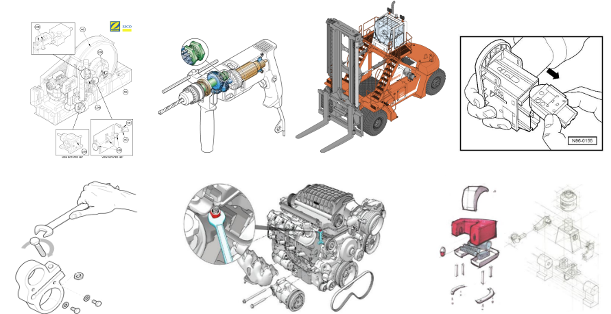

교육에 앞서
: Creo Illustrate는 CAD를 활용해 3D 그림, 동영상을 쉽게 제작할 수 있는 툴입니다.
장비나 가전 제품 사용자가 쉽게 이해할 수 있도록 기술 그림 사용을 사용할 때,(ex 자동차 메뉴얼, 제품설명서 제작)
현장 지식이 전혀 없는 초급 엔지니어를 교육하기 위해 AR콘텐츠나 동영상 제작에 illustrate 사용합니다.
본 교육을 마치면 다음과 같은 결과물을 산업 및 교육 현장에 도입할 수 있습니다.
- Illustrate로 만들 수 있는 이미지 -
- Illustrate로 만든 애니메이션 AR에 적용 -
- Creo Illustrate
- 가져오기
- 그림I
- 그림II
- 그림III
- 애니메이션I
- 애니메이션II
주석, 이미지 삽입 (준비 중)내보내기 (준비 중)- 프로젝트

Illustrate를 간단히 소개하고 인터페이스를 알아보겠습니다.
- 소개
- 인터페이스

설계 파일이나 디자인 3D 파일을 Illustrate로 가져오는 방법을 진행하겠습니다.
Illustrate에서 지원하는 파일 형식을 알아봅시다.
- 가져오기
- 파일 형식
- 포함 / 연결

랜더링, 색상, 조명 등을 복합적으로 조절해 가장 적절한 이미지를 연출할 수 있습니다.
방향 > 랜더링 > 배경 > 조명 순으로 조정하여 원하는 일러스트를 연출해 봅시다.
- 방향
- 랜더링
- 직교/원근
- 배경
- 조명
- 부품 색
- 그림 만들기
- 페이지 설정

이번에는 분해도 일러스트에 사용되는 옵션들을 알아보겠습니다.
- 가시성 제어
- 변환
- 분해선
- 스마트 분해
- 위치 복원
- 단면화

이번에는 sBOM을 수정하는 방법을 알아보겠습니다.
eBOM은 엔지니어링 BOM이고 sBOM은 서비스 BOM입니다.
관련 업무가 아니라면 이번 장은 진행하지 않아도 됩니다.
- 모델트리
- 구조 편집

애니메이션은 영상이나 AR 콘텐츠에 제작에 사용되는 기능입니다.
애니메이션 기능을 알아보겠습니다.
- 애니메이션
- 카메라 이동
- 편집 포인트

애니메이션 제작을 실습하겠습니다.
- 중간 실습

- 어셈블 기능 (육각랜치-육각볼트)
-
-
-
3D 프린터 작업지도서에 사용될 애니메이션을 만들어 보겠습니다.
지금 제작하는 애니메이션은 Vuforia studio, Instruct에서 AR 콘텐츠로 사용됩니다.
사이트 오류나 교육 문의 사항 : ch.lee@dimoa.co.kr